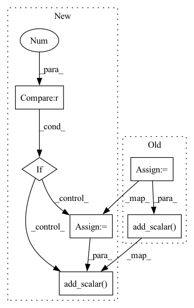

Pattern ID :26650

Before Change
scaled_loss.backward()
else:
total_loss.backward()
scalar_total_loss = total_loss.cpu().item() * self.t_config.gradient_accumulation_steps
self.tb_writer.add_scalar("scalar/total_loss", scalar_total_loss, writer_step)
writer_step += 1
if max_grad_norm > 0:
if self.t_config.fp16:
torch.nn.utils.clip_grad_norm_(amp.master_params(optimizer), max_grad_norm)
After Change
scaled_loss.backward()
else:
total_loss.backward()
if self.rank == 0:
scalar_total_loss = total_loss.cpu().item() * self.t_config.gradient_accumulation_steps
self.tb_writer.add_scalar("scalar/total_loss", scalar_total_loss, writer_step)
writer_step += 1
if max_grad_norm > 0:
if self.t_config.fp16:
torch.nn.utils.clip_grad_norm_(amp.master_params(optimizer), max_grad_norm)
In pattern: SUPERPATTERN
Frequency: 3
Non-data size: 6
Instances
Fragment ID: 79685935
Project Name: airaria/textbrewer
Commit Name: 47e97a5e0d969ecfff62cb79216235e25384b10a
Time: 2020-07-28
Author: yangziqing@163.com
File Name: src/textbrewer/distiller_multitask.py
M Class Name: MultiTaskDistiller
N Class Name: MultiTaskDistiller
M Method Name: train(11)
N Method Name: train(11)
M Parent Class: BasicDistiller
N Parent Class: BasicDistiller
M File Name: src/textbrewer/distiller_multitask.py
N File Name: src/textbrewer/distiller_multitask.py
M Start Line: 67
M End Line: 114
N Start Line: 65
N End Line: 123
'>
Before Change
else:
total_loss.backward()
scalar_total_loss = total_loss.cpu().item() * self.t_config.gradient_accumulation_steps
self.tb_writer.add_scalar("scalar/total_loss", scalar_total_loss, writer_step)
writer_step += 1
if (step+1)%self.t_config.gradient_accumulation_steps == 0:
if max_grad_norm > 0:
After Change
else:
total_loss.backward()
if self.rank == 0:
scalar_total_loss = total_loss.cpu().item() * self.t_config.gradient_accumulation_steps
self.tb_writer.add_scalar("scalar/total_loss", scalar_total_loss, writer_step)
writer_step += 1
if (step+1)%self.t_config.gradient_accumulation_steps == 0:
if max_grad_norm > 0:
'>
Fragment ID: 79685931
Project Name: airaria/textbrewer
Commit Name: 47e97a5e0d969ecfff62cb79216235e25384b10a
Time: 2020-07-28
Author: yangziqing@163.com
File Name: src/textbrewer/distiller_train.py
M Class Name: BasicTrainer
N Class Name: BasicTrainer
M Method Name: train(11)
N Method Name: train(11)
M Parent Class:
N Parent Class:
M File Name: src/textbrewer/distiller_train.py
N File Name: src/textbrewer/distiller_train.py
M Start Line: 50
M End Line: 158
N Start Line: 54
N End Line: 181
'>
Before Change
def write_loss(self, total_loss, writer_step):
cpu_total_loss = total_loss.cpu().item() * self.t_config.gradient_accumulation_steps
self.tb_writer.add_scalar("scalar/total_loss", cpu_total_loss, writer_step)
//for name, loss in losses_dict.items():
// cpu_loss = loss.cpu().item() * self.t_config.gradient_accumulation_steps
// self.tb_writer.add_scalar(f"scalar/{name}", cpu_loss, writer_step)
After Change
def write_loss(self, total_loss, writer_step):
if self.rank == 0:
cpu_total_loss = total_loss.cpu().item() * self.t_config.gradient_accumulation_steps
self.tb_writer.add_scalar("scalar/total_loss", cpu_total_loss, writer_step)
//for name, loss in losses_dict.items():
// cpu_loss = loss.cpu().item() * self.t_config.gradient_accumulation_steps
// self.tb_writer.add_scalar(f"scalar/{name}", cpu_loss, writer_step)
'>
Fragment ID: 79685926
Project Name: airaria/textbrewer
Commit Name: 47e97a5e0d969ecfff62cb79216235e25384b10a
Time: 2020-07-28
Author: yangziqing@163.com
File Name: src/textbrewer/distiller_basic.py
M Class Name: BasicDistiller
N Class Name: BasicDistiller
M Method Name: write_loss(3)
N Method Name: write_loss(3)
M Parent Class: AbstractDistiller
N Parent Class: AbstractDistiller
M File Name: src/textbrewer/distiller_basic.py
N File Name: src/textbrewer/distiller_basic.py
M Start Line: 38
M End Line: 39
N Start Line: 43
N End Line: 52